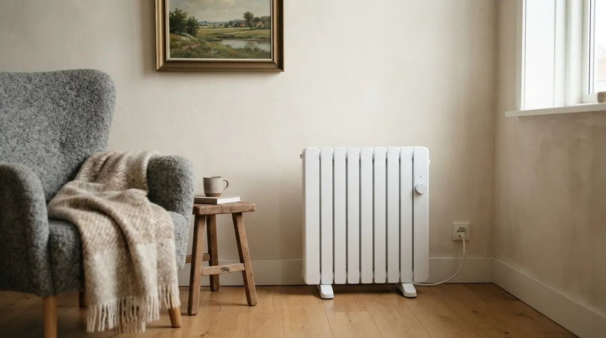

Hvad koster en elradiator i strøm?
En elradiator er billig at købe og dyr at bruge. Her kan du se, hvad den koster pr. time, dag og måned, og hvornår den alligevel giver mening.
Emil Rostgaard Clausen, stifter og redaktør

Det korte svar: En elradiator på 1.000 watt bruger 1 kWh i timen, når den varmer. Det koster ca. 2,70 kr. i timen. Varmer den i 8 timer om dagen, bliver det ca. 648 kr. om måneden. En luft til luft-varmepumpe giver ifølge Bolius samme varme for en fjerdedel til en sjettedel af strømmen.
Pris pr. time, dag og måned
En elradiator laver al strømmen om til varme. Wattallet fortæller derfor præcis, hvad den bruger: 1.000 watt i én time er 1 kWh.
| Effekt | Pr. time | Pr. dag (8 timer) | Pr. måned (240 timer) |
|---|---|---|---|
| 500 watt | 1,35 kr. | 10,80 kr. | 324 kr. |
| 1.000 watt | 2,70 kr. | 21,60 kr. | 648 kr. |
| 1.500 watt | 4,05 kr. | 32,40 kr. | 972 kr. |
| 2.000 watt | 5,40 kr. | 43,20 kr. | 1.296 kr. |
Vi regner med 2,70 kr. pr. kWh i alt, inkl. nettarif, afgifter og moms. Det ligger mellem vores beregning for Vestdanmark (2,64 kr.) og Østdanmark (2,85 kr.) pr. 20. november 2026. Se hvad en kWh koster hos dig.
Termostaten slukker for varmen, når rummet er varmt nok. En radiator, der står tændt hele døgnet, varmer derfor ikke hele tiden. I et godt isoleret rum kan 8 timer om dagen passe. I et utæt rum i frostvejr kan den køre næsten uafbrudt.
Hvad koster en elradiator pr. døgn?
Hvis radiatoren varmer uafbrudt hele døgnet, ser prisen sådan ud. Det sker kun i meget koldt vejr eller i et dårligt isoleret rum.
| Effekt | Pr. døgn | Pr. uge | Pr. måned (30 dage) |
|---|---|---|---|
| 500 watt | 32,40 kr. | 227 kr. | 972 kr. |
| 1.000 watt | 64,80 kr. | 454 kr. | 1.944 kr. |
| 1.500 watt | 97,20 kr. | 680 kr. | 2.916 kr. |
| 2.000 watt | 129,60 kr. | 907 kr. | 3.888 kr. |
En varmeblæser og en oliefyldt radiator med samme wattal koster det samme i timen.
Elradiator eller varmepumpe?
En luft til luft-varmepumpe udnytter strømmen 4–6 gange så godt som en elradiator, skriver Bolius. Den varme, der koster 648 kr. med en elradiator, koster altså ca. 108–162 kr. med en varmepumpe.
Bruger du elradiatorer som den faste varme i et sommerhus eller et værelse, tjener en varmepumpe sig typisk hjem på få år. Se også den billigste el til varmepumpe.
Hvornår giver en elradiator mening?
- Som ekstra varme i korte perioder, fx på et kontor eller et gæsteværelse.
- Til frostsikring i et skur eller et sommerhus.
- Når du kun skal bruge varmen få dage om året.
Elvarme som den vigtigste varmekilde er ifølge Bolius forbudt i huse i områder med fjernvarme eller naturgas. Ekstra radiatorer og sommerhuse er undtaget.
Sådan holder du prisen nede
- Vælg en radiator med termostat, og sæt den på 19–20 grader i stedet for fuld kraft.
- Luk døren til rummet, og sluk, når du går.
- Brug et tænd/sluk-ur, så den ikke varmer om natten i rum, du ikke bruger.
- Har du timepris på strøm, så varm op, før de dyre timer mellem kl. 17 og 21. Se elpriserne i dag.
Elafgiften er sat ned til 1 øre pr. kWh i 2026 og 2027. Det gør elvarme billigere end før. Læs mere om elafgiften.
Beregn selv
Skriv dine egne tal, så regner vi prisen ud.
Den nemmeste besparelse er ofte selve elaftalen. Der er over 1.300 kr. om året til forskel på den billigste og den dyreste elaftale ved et forbrug på 4.000 kWh. Se det billigste elselskab lige nu, eller få regnet din egen besparelse ud.
Spørgsmål og svar
Hvad koster en elradiator på 2.000 watt i timen?
Den koster ca. 5,40 kr. i timen, når den varmer, ved en pris på 2,70 kr. pr. kWh.
Er oliefyldte radiatorer billigere i drift?
Nej. Alle elradiatorer laver 1 kWh strøm om til 1 kWh varme. En oliefyldt radiator holder længere på varmen, men bruger det samme.
Hvad er billigst: elradiator eller varmepumpe?
Varmepumpen. En luft til luft-varmepumpe giver 4–6 gange så meget varme for den samme strøm.
Kilder
- Bolius: Opvarmning med elradiator (varmepumpens effektivitet og regler for elvarme)
Priserne er regnet 21. november 2026 og ændrer sig med elprisen. Tallene for forbrug kommer fra kilderne ovenfor.